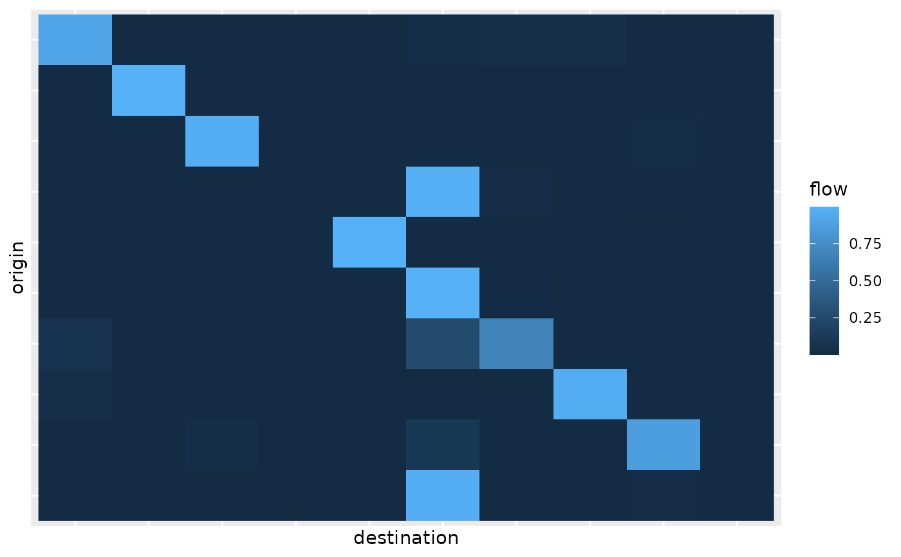
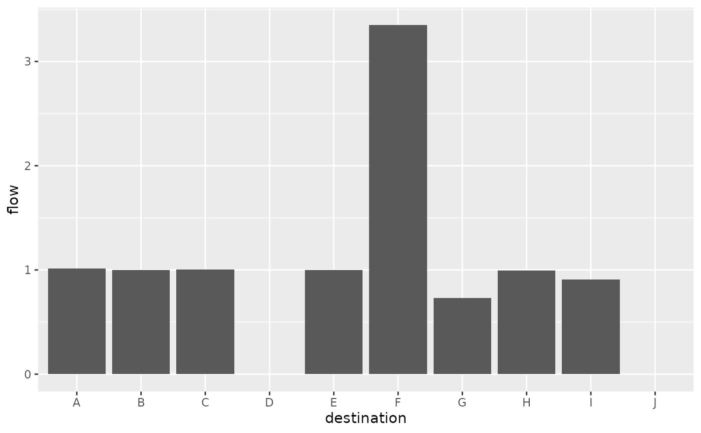
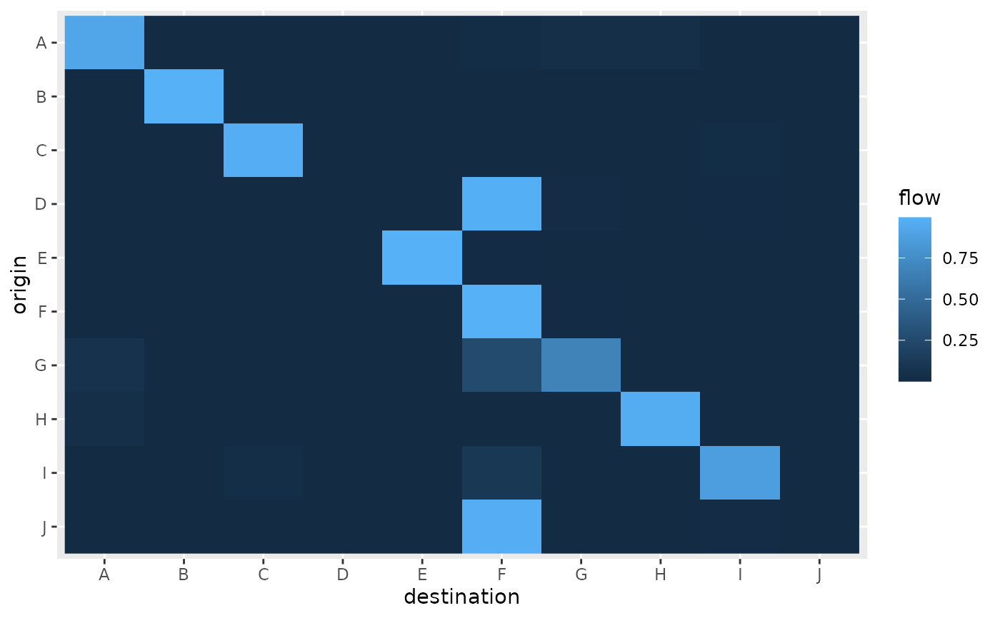
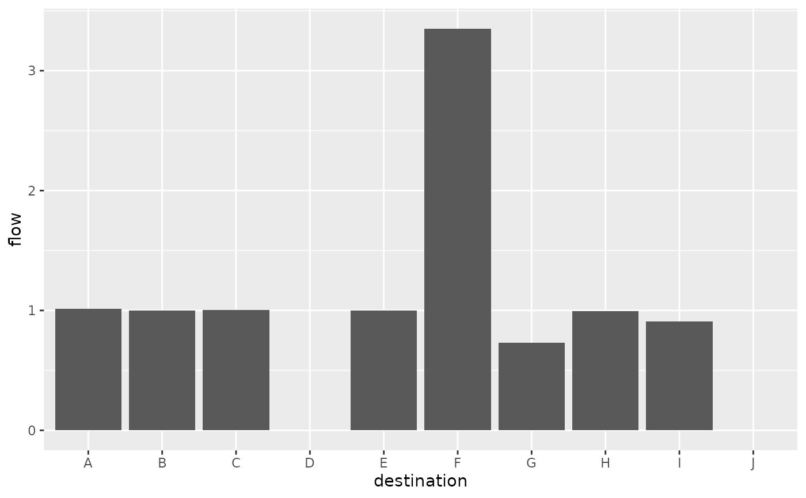
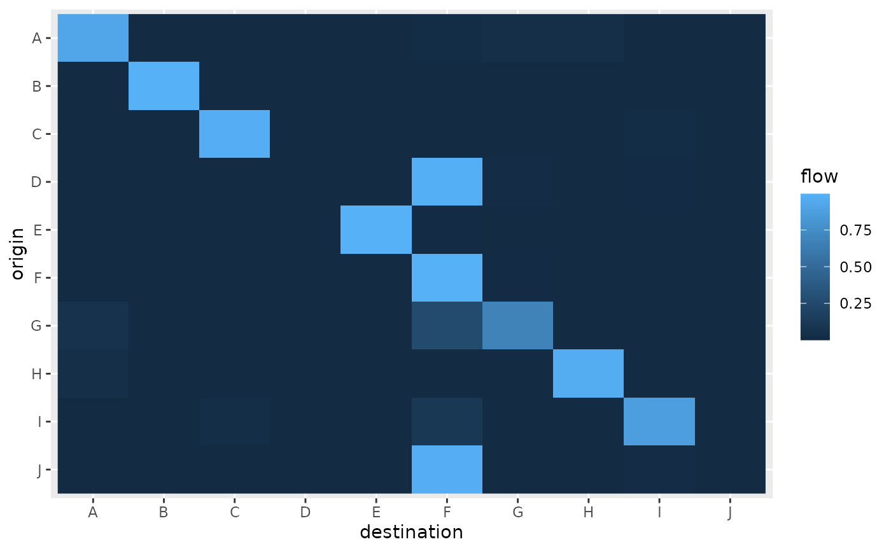
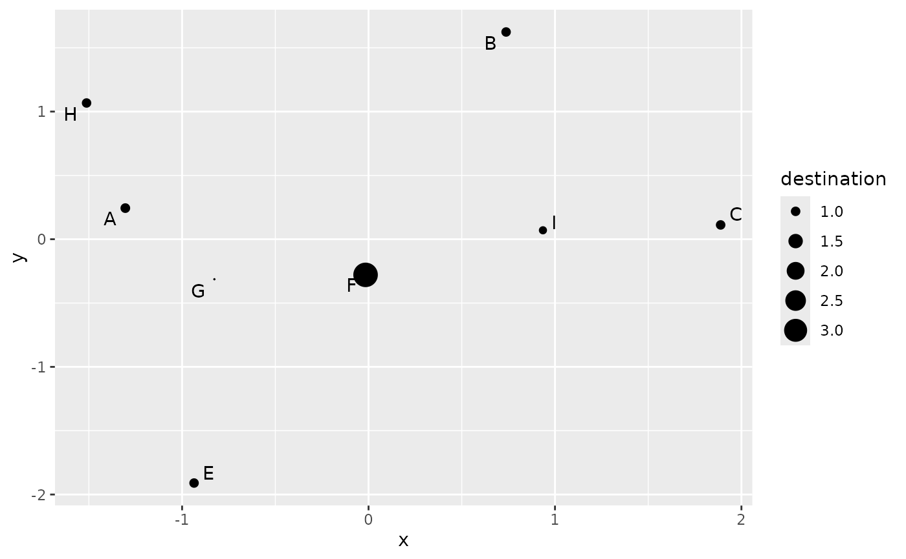
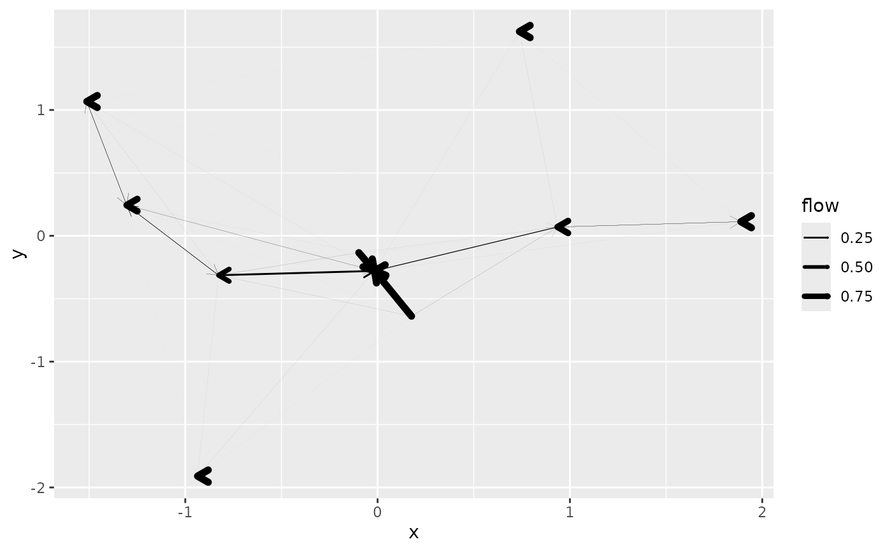
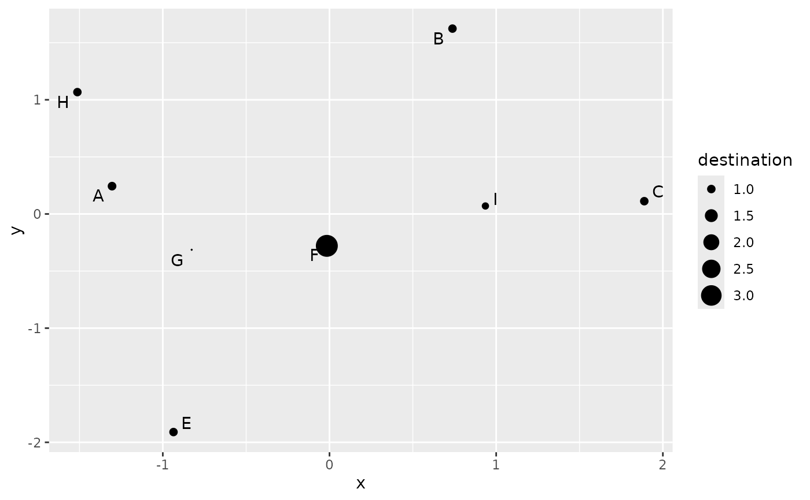
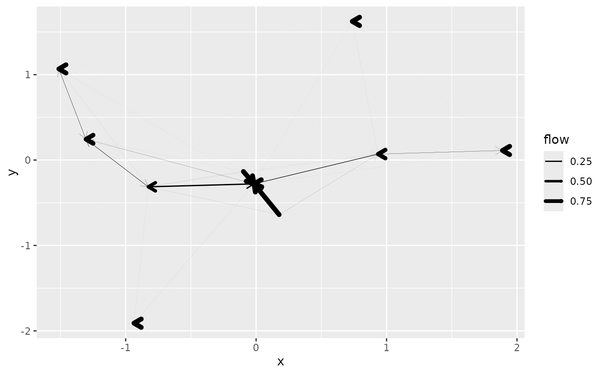

This function represents graphical the flows of a spatial interaction model, in different direct or aggregated forms.
Usage
# S3 method for class 'sim'
autoplot(
object,
flows = c("full", "destination", "attractiveness"),
with_names = FALSE,
with_positions = FALSE,
show_destination = FALSE,
show_attractiveness = FALSE,
show_production = FALSE,
cut_off = 100 * .Machine$double.eps^0.5,
adjust_limits = FALSE,
with_labels = FALSE,
...
)Arguments
- object
a spatial interaction model object
- flows
"full"(default),"destination"or"attractiveness", see details.- with_names
specifies whether the graphical representation includes location names (
FALSEby default)- with_positions
specifies whether the graphical representation is based on location positions (
FALSEby default)- show_destination
specifies whether the position based
"full"flow figure includes a representation of the destination flows (FALSEby default)- show_attractiveness
specifies whether the position based
"full"flow figure includes a representation of the attractivenesses (FALSEby default)- show_production
specifies whether the position based
"full"flow figure includes a representation of the productions (FALSEby default)- cut_off
cut off limit for inclusion of a graphical primitive when
with_positions = TRUE. In the full flow matrix representation, segments are removed when their flow is smaller than the cut off. In the attractiveness or destination representation, disks are removed when the corresponding value is below the cut off.- adjust_limits
if
FALSE(default value), the limits of the position based graph are not adjusted after removing graphical primitives. This eases comparison between graphical representations with different cut off value. IfTRUE, limits are adjusted to the data using the standard ggplot2 behaviour.- with_labels
if
FALSE(default value) names are displayed using plain texts. IfTRUE, names are shown using labels.- ...
additional parameters, see details
Details
The graphical representation depends on the values of flows and
with_positions. It is based on the data frame representation produced by
fortify.sim().
If with_position is FALSE (default value), the graphical representations
are "abstract". Depending on flows we have the following representations:
"full": this is the default case for which the full flow matrix is represented. It is extracted from the spatial interaction model withflows()and displayed using a matrix representation with origin locations in rows and destination locations in columns. The colour of a cell corresponds to the intensity of a flow between the corresponding locations. To mimic the standard top to bottom reading order of a flow matrix, the top row of the graphical representation corresponds to the first origin location."destination": the function computes the incoming flows for destination locations (usingdestination_flow()) and represents them with a bar plot (each bar is proportional to the incoming flow);"attractiveness": the function uses a bar plot to represent the attractivenesses of the destination locations (as given byattractiveness()). This is interesting for dynamic models where those values are updated during the iterations (seeblvim()for details). When the calculation has converged (seesim_converged()), both"destination"and"attractiveness"graphics should be almost identical.
When the with_names parameter is TRUE, the location names
(location_names()) are used to label the axis of the graphical
representation. If names are not specified, they are replaced by indexes.
When the with_positions parameter is TRUE, the location positions
(location_positions()) are used to produce more "geographically informed"
representations. Notice that if no positions are known for the locations, the
use of with_positions = TRUE is an error. Depending on flows we have the
following representations:
"full": this is the default case for which the full flow matrix is represented. Positions for both origin and destination locations are needed. The representation uses arrows from origin location positions to destination location positions. The thickness of the lines (linewidthaesthetics) is proportional to the flows. Only segments that carry a flow above thecut_offvalue are included. When the spatial interaction model is not bipartite (seesim_is_bipartite()), zero length segments corresponding to self exchange are removed. Additional parameters in...are submitted toggplot2::geom_segment(). This can be used to override defaults parameters used for the arrow shapes, for instance. Those parameters must be named. In addition to the individual flows, the representation can include location based information. Ifshow_productionisTRUE, the production constraints (obtained byproduction()) are shown as disks centred on the origin locations. Ifshow_destinationisTRUE, incoming flows (obtained bydestination_flow()) are shown as disks centred on the destination locations. Ifshow_attractivenessisTRUE, attractivenesses (obtained byattractiveness()) are shown as disks centred on the destination locations.show_destinationandshow_attractivenessare not compatible (only one can beTRUE).show_productionis compatible withshow_destinationorshow_attractivenessfor bipartite models only (seesim_is_bipartite()). When disks are used, segments are drawn without arrows, while the default drawing uses arrows. This can be modified with the additional parameters."destination": the function draws a disk at each destination location using for thesizeaesthetics the incoming flow at this destination location (usingdestination_flow()). Only destinations with an incoming flow above thecut_offvalue are included."attractiveness": the function draws a disk at each destination location using for thesizeaesthetics the attractiveness of the destination. When the calculation has converged (seesim_converged()), both"destination"and"attractiveness"graphics should be almost identical. Only destinations with an attractiveness above thecut_offvalue are included.
For the position based representations and when with_names is TRUE, the
names of the destinations are added to the graphical representation . If
with_labels is TRUE the names are represented as labels instead of plain
texts (see ggplot2::geom_label()). If the ggrepel package is installed,
its functions are used instead of ggplot2 native functions. When disks are
used to show aggregated flows, the names match the chosen locations: for
destination flow and attractiveness, destination locations are named, while
for production, origin locations are named (they can be both named when the
model is bipartite).
Examples
positions <- as.matrix(french_cities[1:10, c("th_longitude", "th_latitude")])
distances <- french_cities_distances[1:10, 1:10] / 1000 ## convert to km
production <- rep(1, 10)
attractiveness <- log(french_cities$area[1:10])
flows <- blvim(distances, production, 1.5, 1 / 150, attractiveness,
origin_data = list(
names = french_cities$name[1:10],
positions = positions
),
destination_data = list(
names = french_cities$name[1:10],
positions = positions
),
bipartite = FALSE
)
ggplot2::autoplot(flows)

## bar plots should be almost identical if convergence occurred
sim_converged(flows)
#> [1] TRUE
ggplot2::autoplot(flows, "destination")
 ggplot2::autoplot(flows, "attractiveness")
## names inclusion
ggplot2::autoplot(flows, "destination", with_names = TRUE) +
ggplot2::coord_flip()

ggplot2::autoplot(flows, with_names = TRUE) +
ggplot2::theme(axis.text.x = ggplot2::element_text(angle = 90))

## positions
ggplot2::autoplot(flows, "attractiveness", with_positions = TRUE) +
ggplot2::scale_size_continuous(range = c(0, 6)) +
ggplot2::coord_sf(crs = "epsg:4326")
ggplot2::autoplot(flows, "attractiveness")
## names inclusion
ggplot2::autoplot(flows, "destination", with_names = TRUE) +
ggplot2::coord_flip()

ggplot2::autoplot(flows, with_names = TRUE) +
ggplot2::theme(axis.text.x = ggplot2::element_text(angle = 90))

## positions
ggplot2::autoplot(flows, "attractiveness", with_positions = TRUE) +
ggplot2::scale_size_continuous(range = c(0, 6)) +
ggplot2::coord_sf(crs = "epsg:4326")
 ggplot2::autoplot(flows, "destination",
with_positions = TRUE,
with_names = TRUE
) +
ggplot2::scale_size_continuous(range = c(0, 6)) +
ggplot2::coord_sf(crs = "epsg:4326")

ggplot2::autoplot(flows, "destination",
with_positions = TRUE,
with_names = TRUE, with_labels = TRUE
) +
ggplot2::scale_size_continuous(range = c(0, 6)) +
ggplot2::coord_sf(crs = "epsg:4326")
ggplot2::autoplot(flows, with_positions = TRUE) +
ggplot2::scale_linewidth_continuous(range = c(0, 2)) +
ggplot2::coord_sf(crs = "epsg:4326")

ggplot2::autoplot(flows,
with_positions = TRUE,
arrow = ggplot2::arrow(length = ggplot2::unit(0.025, "npc"))
) +
ggplot2::scale_linewidth_continuous(range = c(0, 2)) +
ggplot2::coord_sf(crs = "epsg:4326")
ggplot2::autoplot(flows, "destination",
with_positions = TRUE,
with_names = TRUE
) +
ggplot2::scale_size_continuous(range = c(0, 6)) +
ggplot2::coord_sf(crs = "epsg:4326")

ggplot2::autoplot(flows, "destination",
with_positions = TRUE,
with_names = TRUE, with_labels = TRUE
) +
ggplot2::scale_size_continuous(range = c(0, 6)) +
ggplot2::coord_sf(crs = "epsg:4326")
ggplot2::autoplot(flows, with_positions = TRUE) +
ggplot2::scale_linewidth_continuous(range = c(0, 2)) +
ggplot2::coord_sf(crs = "epsg:4326")

ggplot2::autoplot(flows,
with_positions = TRUE,
arrow = ggplot2::arrow(length = ggplot2::unit(0.025, "npc"))
) +
ggplot2::scale_linewidth_continuous(range = c(0, 2)) +
ggplot2::coord_sf(crs = "epsg:4326")
 ## individual flows combined with destination flows
## no arrows
ggplot2::autoplot(flows,
with_positions = TRUE,
show_destination = TRUE
) +
ggplot2::scale_linewidth_continuous(range = c(0, 2)) +
ggplot2::coord_sf(crs = "epsg:4326")
## individual flows combined with destination flows
## no arrows
ggplot2::autoplot(flows,
with_positions = TRUE,
show_destination = TRUE
) +
ggplot2::scale_linewidth_continuous(range = c(0, 2)) +
ggplot2::coord_sf(crs = "epsg:4326")
 ## readding arrows
ggplot2::autoplot(flows,
with_positions = TRUE,
show_destination = TRUE,
arrow = ggplot2::arrow(length = ggplot2::unit(0.025, "npc"))
) +
ggplot2::scale_linewidth_continuous(range = c(0, 2)) +
ggplot2::coord_sf(crs = "epsg:4326")
## readding arrows
ggplot2::autoplot(flows,
with_positions = TRUE,
show_destination = TRUE,
arrow = ggplot2::arrow(length = ggplot2::unit(0.025, "npc"))
) +
ggplot2::scale_linewidth_continuous(range = c(0, 2)) +
ggplot2::coord_sf(crs = "epsg:4326")